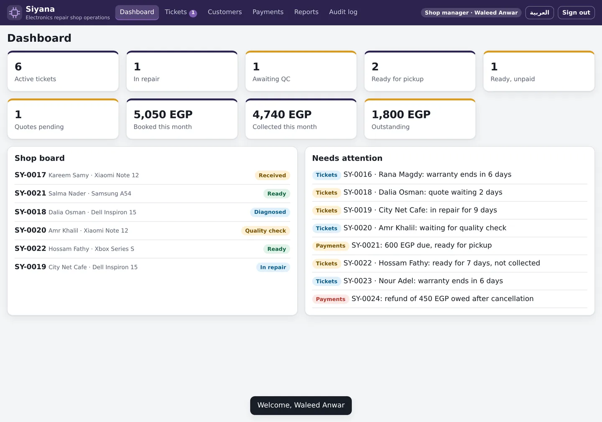
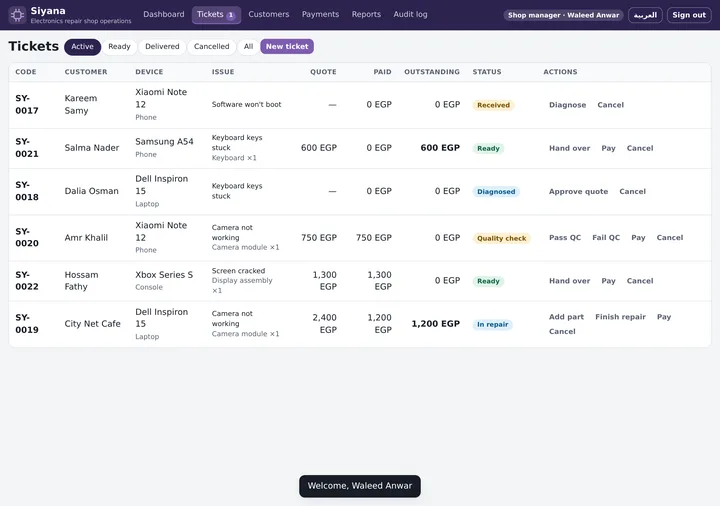
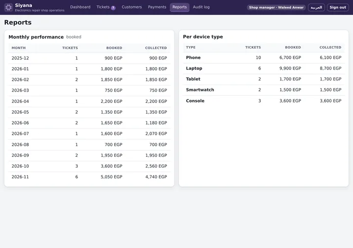
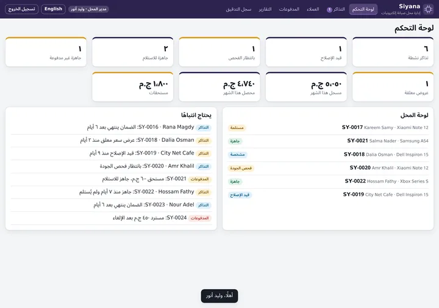
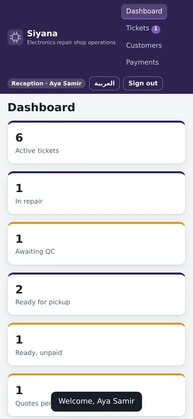

PORTFOLIO DEMO / BUILT / LIVE DEMO
Siyana
Every device, repair and payment, on one record. Shop operations the way a Cairo repair shop actually runs them.

ACTUAL BUILDSiyana · Shop manager dashboard. Fictional shop, customers and devices.
The problem
A repair shop runs on a notebook and the technician's memory. Nobody can say what was wrong with a device or what was quoted for it once the customer leaves, the repair finished last week is found when the shelf fills up, the customer who collected without paying is reconciled from memory when they return, and the warranty argument starts because nobody wrote down when the device was handed over.
What was built
An operations system for one shop with five roles. A ticket is opened for a customer and a device; the technician diagnoses it and suggests a quote; reception approves the final quote, which moves the ticket into repair — payments are only accepted after approval, never above the balance and never dated in the future. Parts are recorded while the repair is in progress. Finishing the repair sends the ticket to quality check; a failed check returns it to repair, a pass makes it ready for collection. Only the front desk hands a device over, never while a balance is open, and every handover opens a warranty window, thirty days by default. Cancelling is manager-only and flags any refund owed on the dashboard. The technician sees quotes but never a payment or a balance; quality check sees no money at all, not even quotes — every amount is removed from the response on the server, not hidden on screen. The interface works in Arabic (right to left) and English, and on a phone.
What changes for the branch
Before. The quoted price is remembered differently by the shop and the customer. The device ready since last week is found when the shelf fills up. The balance a customer still owes is assembled from notebook pages, and the warranty dispute is settled by whoever argues better.
After. The dashboard names the quote waiting for approval for days, the repair that has been open too long, the device waiting for a quality check, the ready device still unpaid, the ready device uncollected for a week, the warranty about to expire and the refund still owed after a cancellation. A device cannot leave while it has a balance, and every handover starts a warranty window everyone can see.
Why it matters to a branch owner
A shop's reputation sits in quotes honoured and warranties kept, and its money sits in small balances that add up. When the diagnosis, the quote, the parts, the quality check and the payment record come from the same ticket the team actually updates, nothing depends on one person's memory, and the warranty end date is a number on a screen, not an argument. These are designed situations, not measured results from a real shop.
The approach
No framework and no build step: plain JavaScript pages, one serverless API function and one logic file that holds every rule (diagnosis before approval, approval before payment, the forward-only pipeline, the quality-check pass/fail loop, the deliver-while-unpaid guard, the payment limits, the warranty windows, per-role views, the deterministic sample shop). The same file runs in the API, the browser and the test suites. Permissions are enforced on the server on every operation, create operations carry idempotency keys so a retried request never takes an order or records a payment twice, and every action lands in an audit log the manager alone can read. What a role must not see is removed from the response on the server, not hidden on screen.
The result
A live demo anyone can open. Sign in as the shop manager (PIN 1111), reception (2222), finance (3333), a technician (4444) or quality check (5555); the PINs are on the sign-in screen. The sample shop has 10 customers, 24 tickets across a year of history and the current week from received to delivered, and 44 payments across twelve months, with one cancelled ticket still owed a refund. Verification: 12 unit tests and 122 browser and API checks run to completion against the live site, covering forged tokens, malformed and oversized bodies, every role's permission lane, the complete ticket lifecycle from intake to a ready, paid, delivered device, the approval and balance guards, the quality-check loop, idempotency keys, the technician and quality check never seeing money even on typed hash routes, XSS stored as text, Arabic RTL, phone-width layouts and zero page errors. The demo state resets itself roughly every six hours, so it always opens as the same working shop.
Inside the build
Open any preview to see the full capture. Captures show demonstration content, not evidence of client use.



